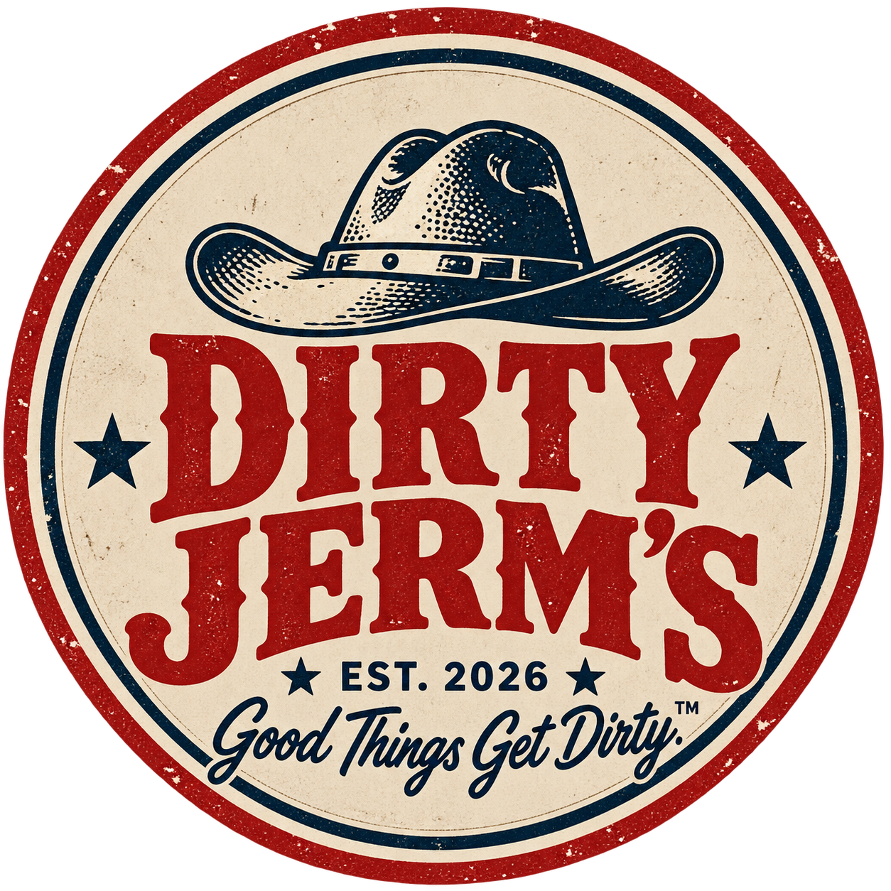

THE PLANT COMPANY WITH DIRT UNDER ITS NAILSPLANTS. DIRT.
PLANTS. DIRT.
GOOD TROUBLE.
We make plant shit. The good kind. Built with grit, grown with nerve, and never too precious to get dirty.

We make plant shit. The good kind. Built with grit, grown with nerve, and never too precious to get dirty.